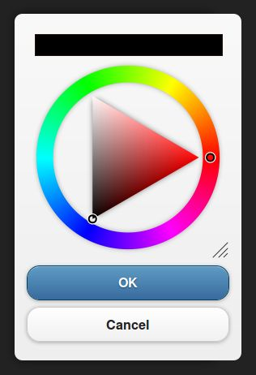

<?php

require '../template.php';
require 'menu.php';

$html  = getHeader('..', 'mobile-dialog', 'Documentation / Demos / jQuery Mobile dialog integration');
$html .= '<div class="content-primary">';
$html .= '<form action="#" method="get">';
$html .= '<h2>jQuery Mobile dialog integration</h2>';

$html .= '<div data-role="collapsible" data-collapsed="false"';
$html .= ' data-theme="b" data-content-theme="d"';
$html .= ' data-collapsed-icon="arrow-r" data-expanded-icon="arrow-d">';
$html .= '<h3>jQuery Mobile dialog</h3>';
$html .= '<p></p>';
$html .= '<a data-role="button" data-theme="c" href="http://sandbox.chromoselector.com/uAGgm/embedded/result,js,html,css/">jsFiddle: Resizable color picker in mobile dialog</a>';
$html .= '</div>';
$html .= '</form>';
$html .= '</div>';
$html .= '<div class="content-secondary">';
$html .= '<nav>';
$html .= '<ul data-role="listview"  data-theme="c" ';
$html .= 'data-dividertheme="d" data-count-theme="e">';
$html .= getDemosMenu('..', 'mobile-dialog');
$html .= '</ul>';
$html .= '</nav>';
$html .= '</div>';
$html .= getFooter('..');

echo tidy_up($html);

?>
